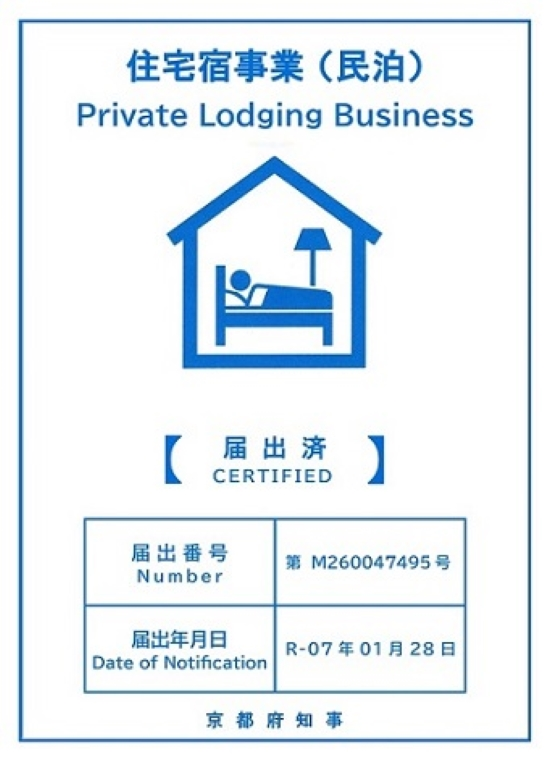
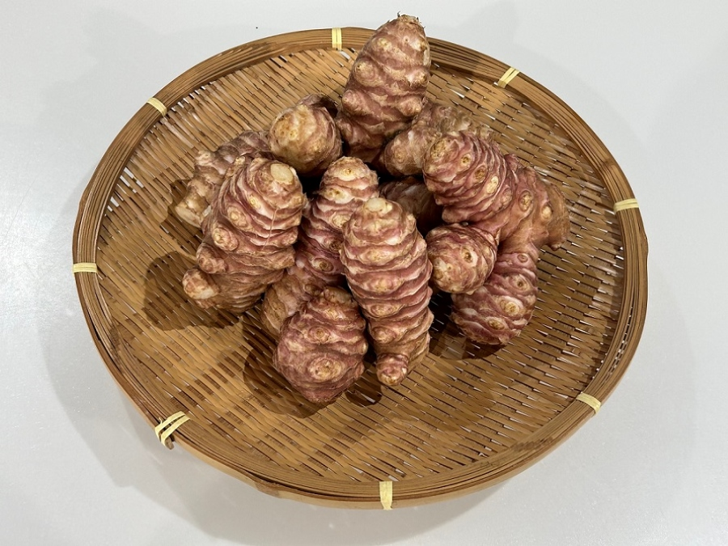

民泊 文右衛門
京丹後市久美浜町にある古民家民泊『文右衛門』。
一日一組限定、純和風家屋の離れ一棟貸しの宿です。
一棟貸しなので、気兼ねなく自分たちの静かな時間を楽しめます。

特製「おかわかめ」､「赤菊芋」と旬の野菜
ぼかし肥料を使って育てた自家栽培野菜や美味しいお米が提供できます。
海のわかめに似た不思議な食感の「おかわかめ」と
イヌリンを豊富に含む「赤菊芋」が当宿の一押し健康野菜。
どちらも栄養満点で食感も楽しいです。

 文右衛門をLINE友だち追加
文右衛門をLINE友だち追加